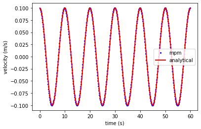

Axial vibration of 1D bar using LearnMPM#


Implementation of axial 1D bar using LearnMPM module.
# include the learnmpm path to the current path
import sys
sys.path.append("..")
import matplotlib.pyplot as plt
import numpy as np
from analytical import axial_vibration_bar1d as avb
from LearnMPM import mesh
from LearnMPM import material
from LearnMPM import params as prms
from LearnMPM import solver
# bar length
Length = 25
# number of elements
nelements = 15
# create an 1D mesh
msh = mesh.Mesh1D(domain_size=Length, nelements=nelements)
# define a linear material
elastic = material.LinearElastic1D(E=100, density=1)
# generate particles in mesh elements and set the material
msh.generate_particles_uniform(ppc = 2, material = elastic)
# msh.generate_particles_gauss(ppc = 2,material = elastic)
# setup the model
params = prms.Params()
params.mpm_scheme = 'USF'
params.nsteps = 600
params.dt = 0.1
params.results_particle = -1
params.results_fields = ['velocity', 'position']
params.damping = 0.0
# verify time step
dt_critical=msh.elements[0].size/np.sqrt(elastic.E/elastic.density)
params.dt = params.dt if (params.dt < dt_critical) else dt_critical
# impose initial condition in particles
vo = 0.1
b1 = np.pi/2.0/Length
for prtcl in msh.particles:
prtcl.velocity = vo * np.sin(b1 * prtcl.x)
# Apply boundary conditions
msh.boundary_nodes = [0]
# solve the problem in time
solver.explicit_solution(msh, params)
Plot velocity results of the last particle
# get analytical solution
[anal_xt,anal_vt, anal_t] = avb.axial_vibration_bar1d(Length, elastic.E, elastic.density,
params.dt * params.nsteps, params.dt, vo, msh.particles[params.results_particle].x)
# plot mpm solution
plt.plot(params.results['time'], params.results['velocity'], 'ob', markersize = 2, label='mpm')
# plot the analytical solution
plt.plot(anal_t,anal_vt,'r',linewidth=2,label='analytical')
# configure axis, legends and show plot
plt.xlabel('time (s)')
plt.ylabel('velocity (m/s)')
plt.legend()
plt.show()
